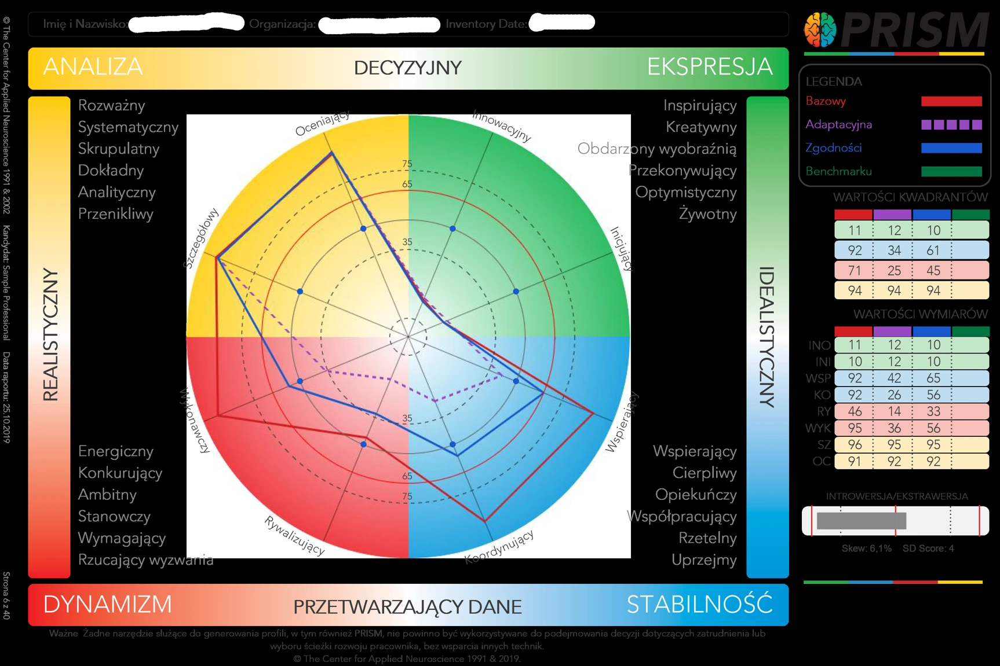

Jestem praktykiem PRISM Brain Mapping od … roku. Do tej pory omówiłam ponad … wyników, wspierając organizacje, menedżerów oraz osoby planujące zmianę zawodową w lepszym poznaniu własnych zasobów i dopasowaniu środowiska pracy do ich naturalnych preferencji. Jestem również wpisana na listę certyfikowanych praktyków PRISM Brain Mapping prowadzoną przez Clever Brains, wyłącznego dystrybutora narzędzia w Polsce.
Co to jest PRISM Brain Mapping? To mapa Twoich preferencji
Jakie zachowania przychodzą Ci naturalnie? W jakich sytuacjach działasz z łatwością, a które wymagają od Ciebie większego wysiłku? Jak funkcjonujesz w relacjach, pracy zespołowej czy pod presją? I w jakim środowisku zawodowym możesz najlepiej wykorzystać swoje mocne strony?
PRISM Brain Mapping to narzędzie psychometryczne, które pomaga lepiej zrozumieć preferowane przez Ciebie sposoby zachowania – zarówno w życiu zawodowym, jak i w relacjach z innymi. Wizualnie – w formie mapy czterech kolorów – unaocznia ona indywidualny układ Twoich preferencji, ich intensywność oraz to, jak mogą wpływać na Twój sposób działania i funkcjonowania w różnych sytuacjach.

Co pokazuje PRISM Brain Mapping?
Badanie odbywa się online i polega na udzieleniu odpowiedzi na kilkadziesiąt pytań. Na ich podstawie powstaje indywidualny profil przedstawiający 8 typów preferowanych zachowań oraz ich natężenie. PRISM pozwala również przyjrzeć się 26 czynnikom związanym z zachowaniem badanej osoby w określonych sytuacjach.
Najbardziej charakterystycznym elementem badania jest mapa PRISM – przejrzysta wizualizacja, która pomaga zobaczyć własny profil psychologiczny z różnych perspektyw. Pokazuje między innymi naturalne preferencje zachowania, sposób, w jaki dostosowujemy się do wymagań otoczenia, oraz wzorzec zachowania, który najczęściej prezentujemy w relacjach z innymi.
PRISM dostarcza także informacji dotyczących inteligencji emocjonalnej, odporności psychicznej oraz cech osobowości w modelu Wielkiej Piątki. Dzięki temu pozwala szerzej spojrzeć na własne funkcjonowanie i dostrzec zarówno mocne strony, jak i obszary, które mogą wymagać większej uwagi.
Po co wykonywać PRISM Brain Mapping?
PRISM może być wartościowym punktem wyjścia do rozwoju osobistego i zawodowego. Pomaga lepiej zrozumieć, dlaczego w jednych sytuacjach działamy spontanicznie i z łatwością, a inne wymagają od nas większego wysiłku. Badanie to może być również pomocne przy podejmowaniu decyzji dotyczących kariery, rozwoju kompetencji, komunikacji czy współpracy z innymi.
W przypadku organizacji PRISM znajduje zastosowanie między innymi w rozwoju liderów, budowaniu zespołów, rekrutacji, zarządzaniu talentami i planowaniu ścieżek rozwoju.
Dlaczego warto omówić wynik z praktykiem?
Sam raport dostarcza wielu informacji, ale jego prawdziwa wartość zaczyna się, kiedy potrafimy odnieść go do własnej sytuacji. Podczas indywidualnej sesji wspólnie przyglądamy się Twojej mapie, interpretujemy poszczególne obszary i szukamy odpowiedzi na pytanie: co ta wiedza oznacza właśnie dla Ciebie?
Rolą praktyka jest przełożenie wyników badania na język codziennych doświadczeń i konkretnych sytuacji – zawodowych, relacyjnych czy związanych z podejmowaniem decyzji. Dzięki temu PRISM nie pozostaje jedynie zestawem wyników, lecz może stać się punktem wyjścia do bardziej świadomego działania i rozwoju.
Jeśli chcesz lepiej poznać swoje naturalne preferencje i dowiedzieć się, jak świadomie wykorzystywać je w pracy i relacjach, zapraszam na badanie PRISM Brain Mapping wraz z indywidualną interpretacją wyników.